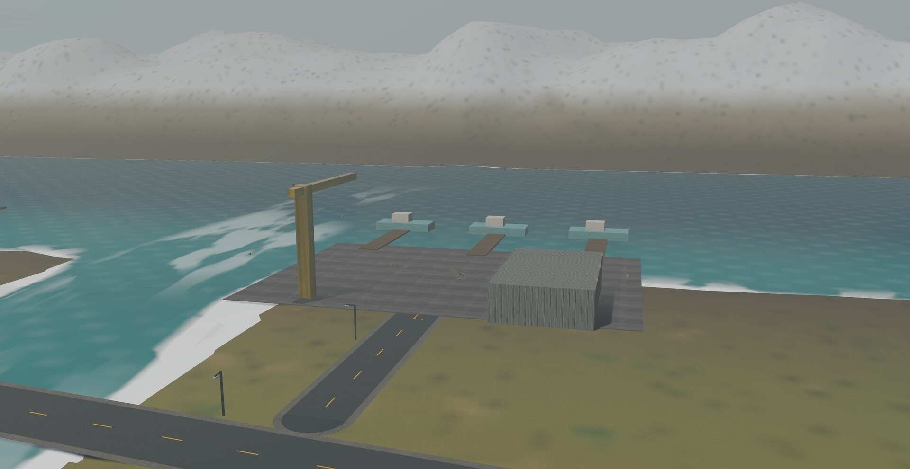
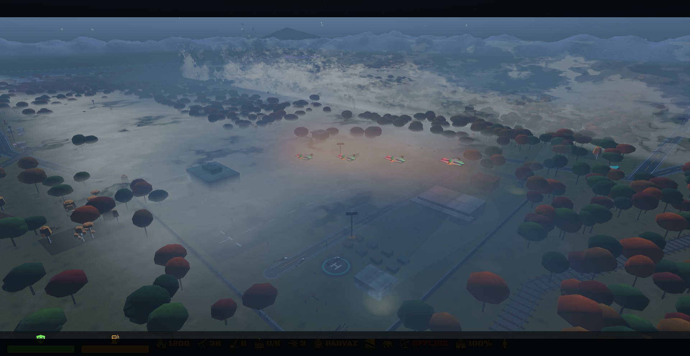
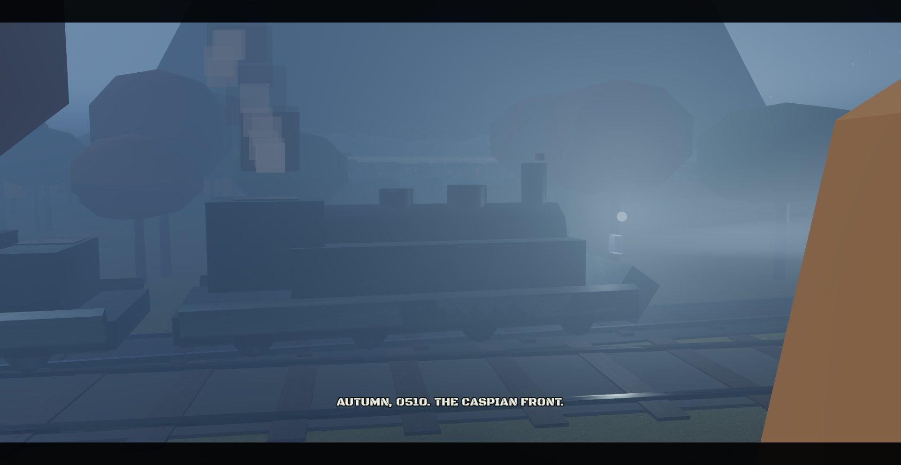
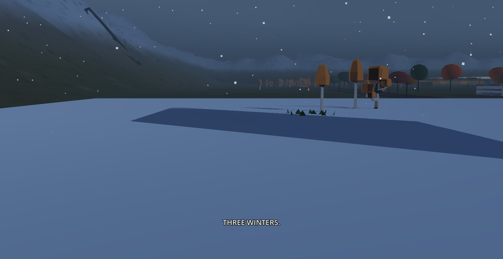
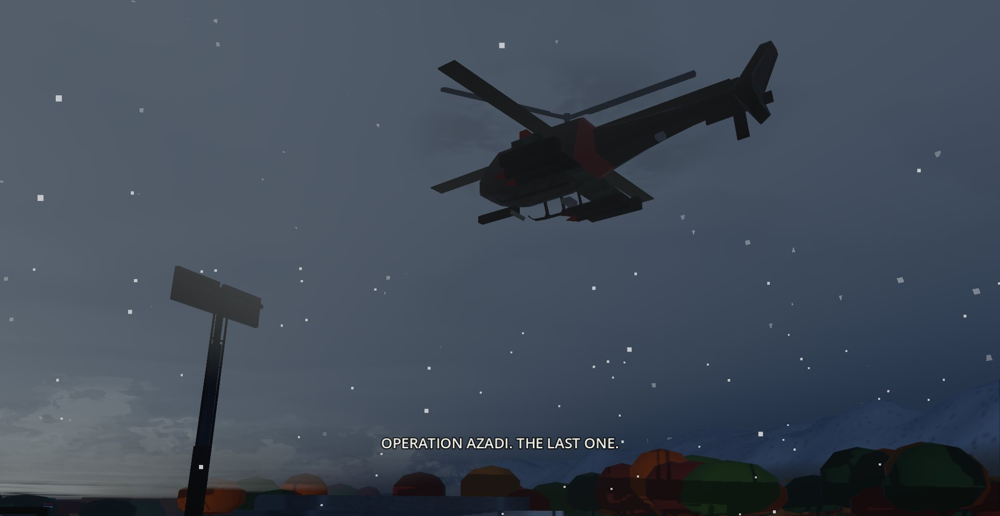

The battle core
Lift the glowing gyroscopic core off the eastern pad and lower it onto its receiver in the west. Only then is it yours.
The proxy war becomes a world war on the Caspian coast.

One uninterrupted camera: the armored train at its station in the fog, the seawall town, the beach, the rice cooperative, the regime's five-pad base, and finally your gunship, cloaked, coming over the mountains.
The regime's eastern base is five armored pads, each guarded by hunting searchlights. Each pad hides a prototype system worth stealing.

Your gunship arrives cloaked and only flickers back into view as it lands. A clean winch trip raises no alarm, and a quiet pad sends nothing after you.

Each searchlight answers to its nearest pad. Get caught in the beam, or shoot the lamp, and that pad's alarm sounds: a ten-vehicle detachment drives out of the regime tunnel and its factory starts mobilizing.
Attack the base before you take the battle core and all five pads wake at once. That is the deliberate bad idea.
Shahin's orders open as you earn them. Every stolen system is physical cargo, flown across the map on your winch line and seated on its matching pad in the west.
Lift the glowing gyroscopic core off the eastern pad and lower it onto its receiver in the west. Only then is it yours.

DestroySixteen armored cars out of the Shahin station: SAM cars, anti-aircraft mounts and twin cannon turrets behind a locomotive that throws its own flares.

StealFire control, anti-air, experimental power and the datacenter. Each lift takes the bonus from the enemy and brings a western pad online for you.

HoldONAT and RKA landing ships come ashore from opposite ends of the Caspian and collide in the town at the center. Hold your whole line while they do.
Slate-teal Caspian water and an olive sediment shelf. A seawall town, an open public beach, marsh walks, a working rice plain and rail industries, all of them living places before the war reaches them. Copper Hyrcanian forest climbs toward the Alborz snowline, and the weather moves from rain to mist to sleet to snow.